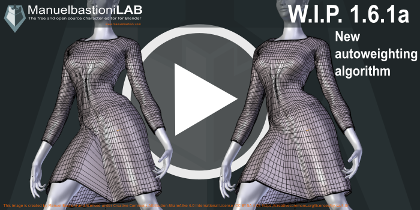
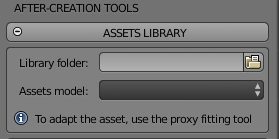

ManuelbastioniLAB 1.6.1a released!
19 May 2018
The version 1.6.1a is an intermediate release between 1.6.1 and 1.6.2. It includes important improvements in the proxy system and usability and fixes some bugs in the modelling area.
Now the transfer of rigging from the lab character to the proxy object is more accurate and smooth, with a new algorithm based on the attraction force of every vertex of the base model. The bug of the "scaled model" is also fixed. 
There is also a big improvement in the usability of fitting system: now the selection of the elements is simpler and direct, thanks to a smart menu that shows only the valid characters and proxies in the scene.

Another interesting new feature is the selector for assets directory: now it's possible to use a custom folder for the library of assets in blend format.

Version 1.6.1a also fixes various modelling bugs: the displacement error of some teeth vertex and the lack of "closed eye" element in the expressions of female models.
Most of the remaining tasks to complete the 1.6.2 (and the 1.7.0) are just a huge modelling work, as you can see in the progress pages of 1.6.2 and 1.7.0...